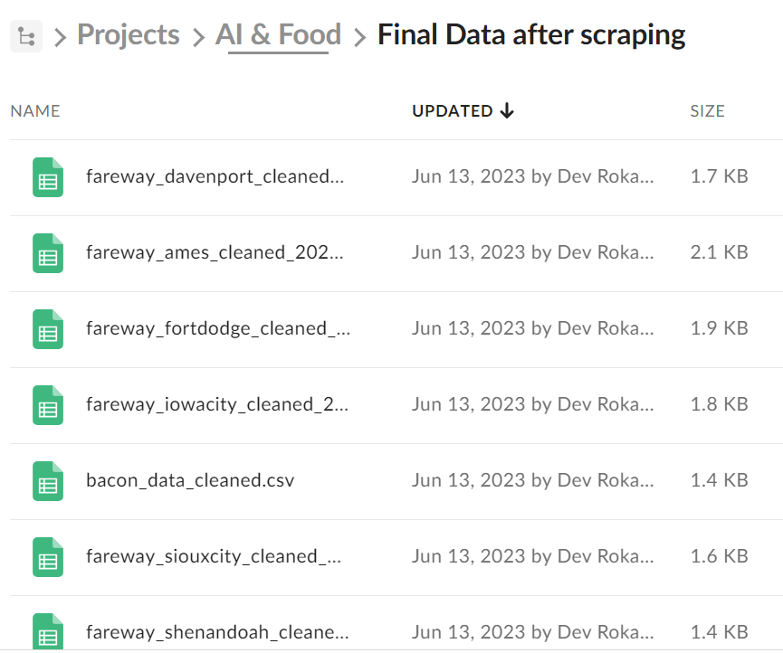
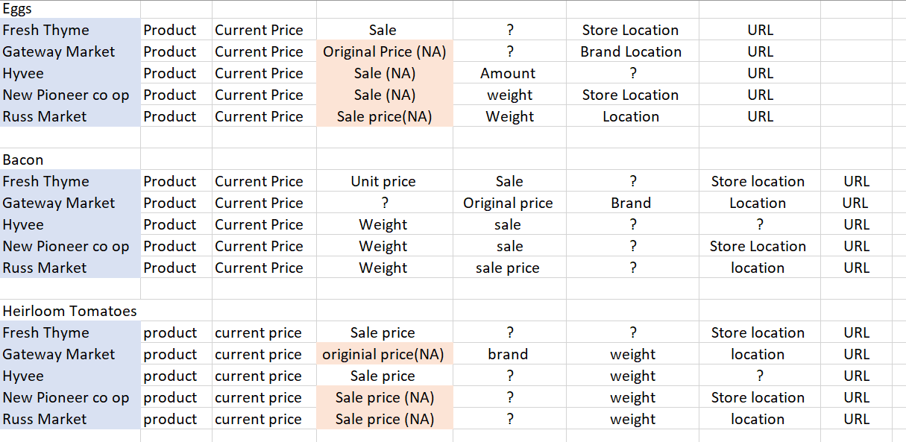
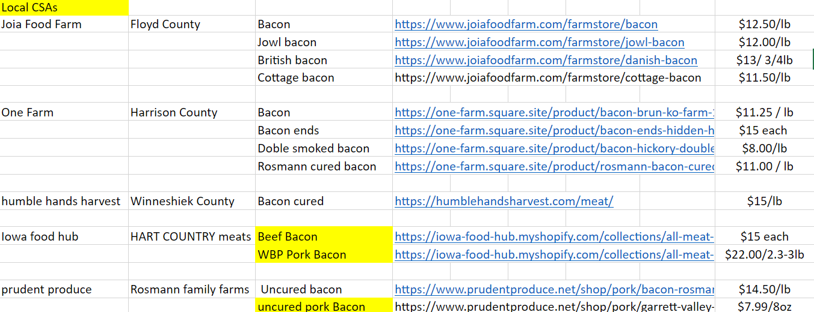
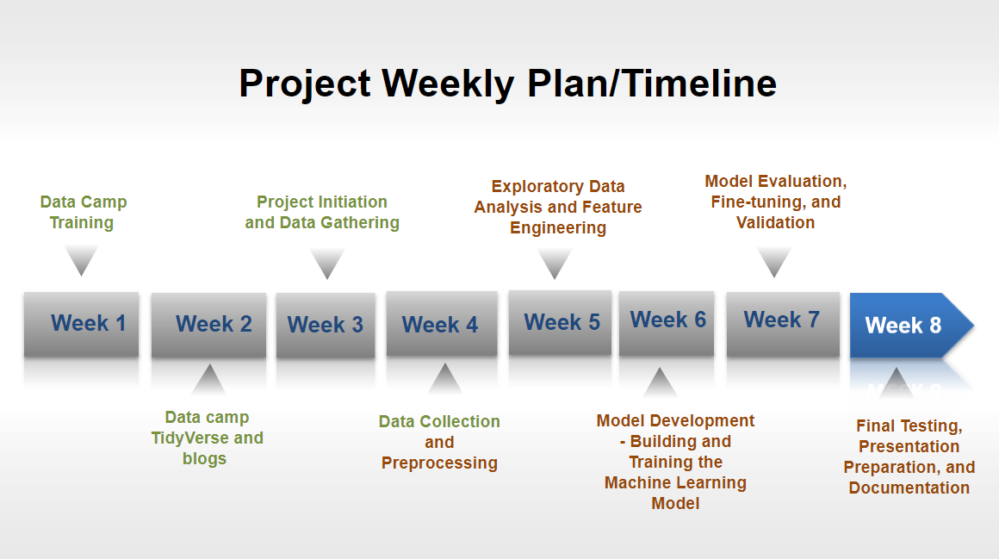
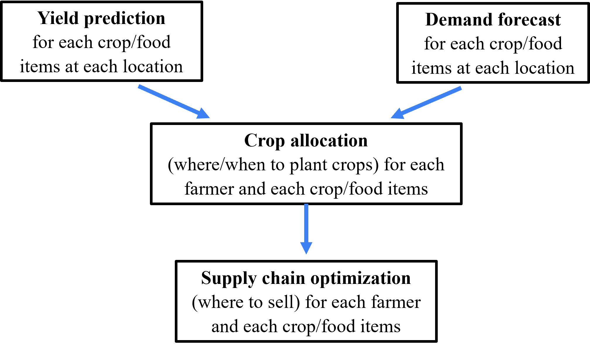
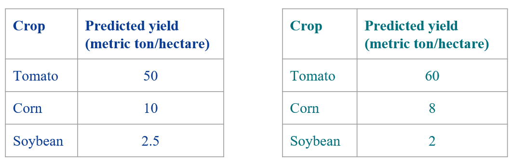
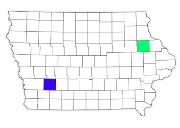
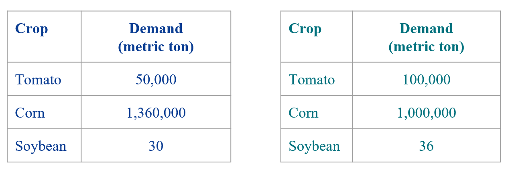
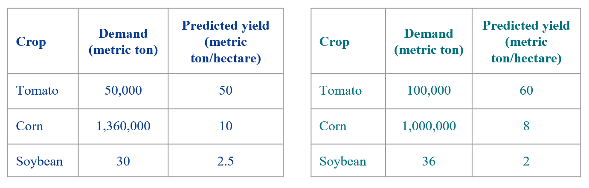
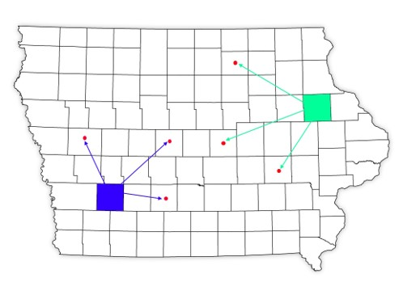

This Week’s Tasks
- Continued working on web scraping, specifically building spiders for other dynamic websites.
- Started cleaning part for the data that were web scraped.
- Collected more data from local farms and CSAs websites
- Attended ITAG VI conference at Sheraton West Des moines
- Rough sketch of AI in Local Food project
Web scraping- spiders
- Completed building spiders for 5 more dynamic websites like Gateway Market, Hyvee, Russ Market, New Pioneer Co op and Fresh Thyme
- link : Spiders
Web Scraped Data cleaning
Started working on cleaning web scraped data simultaneously.

This was actually a little bit time consuming as data sets had different columns and we needed to organize the final data set by dropping few unecessary columns.
We also realized few data sets has some columns has other did not had as shown below

Data collection from local farms and CSAs
After collecting data from grocers, went on to collecting more data for local farms and CSAs from Iowa’s CSAs directory.

.png)
.png)
- Started building spiders for local farms and CSAs websites as well
Attended ITAG VI conference
- Learned how modernizing ArcGIS web App Builder apps using experience Builder can be useful.
- Had a long tiring day!
Project’s roadmap/timeline

A glimpse of AI in Local Food project
Summary of the project:
What to grow?
Where to grow?
How much to grow?
Where to sell?
How to sell (processed/not processed)?
In this blog, we showed the conceptual tools to tackle four questions but left the last one unanswered.
Project flowchart/modules

Yield Prediction
This is an independent module which means we do not need results from any other module to execute this step.
This is a Necessary step to answer “what to grow” and “where to grow”.


Goal: To determine the crop/food item yield per unit area for a specific location in small farms.
Challenges:
Predicting the yield of each different crop/food item would be different. For example, predicting the yield for heirloom tomatoes would be substantially different from that of corn.
Furthermore, the factors affecting the yield of heirloom tomatoes would be different from that of eggs/bacon.
The lack of data poses a significant challenge for specific crops or food items.
Potential/temporary solution:
We can use the data of a closely related crop as a proxy. For example, in the absence of heirloom tomato data, we can rely on the data from closely related varieties like roma tomatoes as a substitute.
A thorough literature review is necessary to identify potential proxy crops for our target crops.
Current tasks:
Finding out the data, if possible.
In the absence of data, we will determine a suitable proxy crop to serve as a substitute for the crop of interest.
Demand Forecasting
This is an independent module which means we do not need results from any other module to execute this step.
Necessary step to answer “what to grow”, “where to grow”, “how much to grow”, “where to sell”.


Goal: To forecast the demand for a crop/food item at a given location.
Challenges:
Demand data for certain crops/food items might not be available.
Determine the factors that influence the demand.
Finding out the data of these factors
Potential and temporary solution:
If data regarding the key factors and/or the historical demand data of crop/food items are not available, we can build an economic model based on the following concepts:
the relation between a product’s supply, demand with price (in this case, crop/food item) as described in economics!
factors affecting the demand and supply of the product.
factors affecting demand and supply of the complimentary products.
factors affecting the demand and supply of substitute products.
Current tasks:
Finding out the historical pricing data at different locations.
Finding out the demand data at different locations.
In situations where data is unavailable, we can opt to develop an economic model instead of relying on a data-driven approach.
Crop Allocation
This module depends on the solution of the previous two module. That means in order to start this module we need the results from “Yield Prediction” and “Demand Forecasting” modules.
This module answers the questions “where to grow, what to grow, how much to grow”



Goal: To determine the most favorable combination of crop types, planting locations, and quantities for individual farmers.
The objective is to enable farmers to make informed decisions regarding their crop selection, where to plant them, and how much to produce, ultimately maximizing the overall profitability across all farmers involved.
Challenges: A common error is advising all farmers to focus on cultivating a single crop that has the potential for high revenue. Such situations can lead to a significant increase in the supply of that specific product, causing a shortage of supply for other crop/food items.
Current task: A toy model demonstrating the concept.
Feedback received:
- We should consider farmers’ willingness to accept our recommendation.
- We should not enforce hard boundaries for planting crops, such as restricting a county to grow only corn and excluding other crops. Instead, we should adopt a flexible approach that allows for the cultivation of various crops in every county.
Supply Chain Optimization
This module depends on the solution of the previous module. That means in order to start this module we need the results from “Crop allocation” module.
Answers the question “where to sell”.

Goal: To determine where and at what quantity a farmer should sell crops/food items, maximizing the overall profit among all the farmers.
Challenges:
The yield of the crops would be distributed in the final phase of the crop cultivation months.
Depending on the freshness and amount of the crops to sell, the decision support system (our software) should recommend the store for selling the products.
Current task: A toy model demonstrating the concept.
Feedback received:
- A map of the demands and the supplies of the crops itself provides hints about where to grow and sell products.